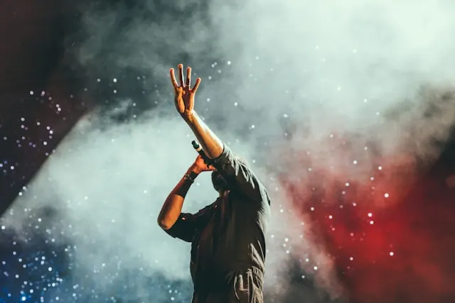

2 RUFF, Vol. 1
2023
What Came Before
2022
fabric presents
2020
RTRN II JUNGLE
2019
Tribe
2017
Brand New Machine
2013
Live At Brixton
2012
No More Idols
2011
More Than Alot
2008
mar
23
Miami
Chase & Status
sáb, 19:30 · Boyfront Park
abr
24
Belfast
Chase & Status + Lude
mie, 19:30 · RAC Arena
may
14
Perth
Chase & Status whit Luude
lun, 23:23 · Vortex Park
ago
02
BCN
Chase & Status
mar, 23:23 · Razz
sep
23
NY
Chase & Status
sáb, 19:30 · Boyfront Park
oct
12
London
Chase & Status
sáb, 19:30 · Boyfront Park
oct
31
Napoli
Chase & Status
sáb, 19:30 · Boyfront Park
dic
1
Roma
Chase & Status
sáb, 19:30 · Boyfront Park
dic
2
Martorell
Chase & Status
sáb, 19:30 · Boyfront Park
Un montón de amigos crean Badaddan
Mar 17 de feb 23
La nueva escuela y la vieja del drum and bass hacen migas para crear lo que sin duda, incluso antes de su release ha sido el track más pinchado en clubs y festivales del género [leer más]
DJ Famoso lanza nuevo álbum
Mié 23 de mar 23
El reconocido DJ Famoso ha lanzado su esperado nuevo álbum. Este álbum, que combina elementos de techno y house, ya está causando sensación en la escena musical. [leer más]
Anuncian fechas para el Festival de Música Electrónica
Jue 24 de mar 23
Los organizadores del Festival de Música Electrónica han anunciado las fechas para este año. El evento contará con la presencia de los mejores DJs y productores de música electrónica del mundo. [leer más]
Anécdotas
El concierto inesperado

En una gira por Europa, el autobús de la banda se averió en un pequeño pueblo en Alemania. Mientras esperaban la reparación, decidieron hacer un concierto improvisado en la plaza del pueblo. Resultó ser uno de los conciertos más memorables de la gira.
La fan sorpresa
Durante un concierto en Nueva York, una fan subió al escenario y sorprendió a todos al cantar perfectamente una de las canciones más difíciles de la banda. Resultó que era una cantante profesional que había sido fan de la banda desde su infancia.

El encuentro con un ídolo
En una ceremonia de premiación, los miembros de la banda tuvieron la oportunidad de conocer a uno de sus ídolos musicales. Fue un momento emocionante y surrealista que reafirmó su amor por la música.
La canción olvidada
Durante un concierto, la banda comenzó a tocar una canción que no habían practicado en años. A pesar de algunos errores iniciales, lograron recordarla y la tocaron con tanta pasión que se convirtió en uno de los momentos más destacados del concierto.
